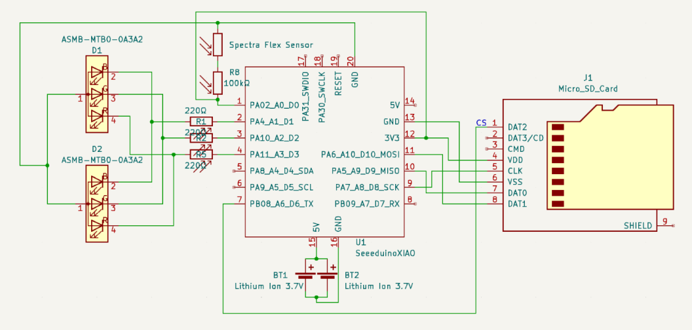
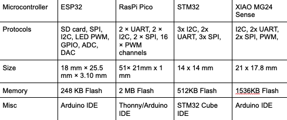

1.0The Gap
We understand fish locomotion mostly from short camera clips in lab tanks. That breaks down in the low-light, turbid, natural environments fish actually live in — and existing tracking either pierces the fish (tags) or is locked to a fixed camera view. As Exoskeleton Lead and Finance Manager on team ExoTic, my job was the mechanical system: a harness that carries real sensing without changing how the fish swims.
2.0Designing to the Body
The 5%-of-body-weight constraint drives everything. To fit the organic shape of a largemouth bass, I started from a 3D mesh scan, lofted cross-sectional profiles in SolidWorks into a body-conforming shell, then strategically removed material to leave the lightest structure that still carries the electronics.
- Ran a weighted concept-selection matrix across manufacturing methods, fasteners, and size adjusters — selecting SLA flexible resin with external adjustable fasteners.
- Printed "dog bone" specimens of Formlabs Elastic 50A and Flexible 80A at 1.0/1.5/2.0 mm; chose Flexible 80A at 1.5 mm for its higher tear resistance (8.9 vs 3.4 MPa UTS) at acceptable flexibility.
- Iterated the CAD through three major revisions — relocating the microcontroller and SD reader ventrally, LEDs dorsally for visibility, batteries balanced near the center of mass.
3.0The Integrated System
Two flex sensors run along the lateral line to measure body curvature; a 6-DOF IMU on the XIAO MG24 Sense captures acceleration and rotation; data logs to a microSD card while dorsal RGB LEDs translate real-time curvature into a visible posture readout. The whole system runs on open-source code and off-the-shelf parts — ~$101 per unit against commercial systems costing thousands.



4.0Outcome
The team delivered a working proof-of-concept: an SLA-printed exoskeleton with verified flex-sensor curvature mapping, logged IMU data, and posture-driven LED feedback — validated for testing at Prof. James Liao's lab. As finance manager I also owned the budget, holding development cost to $236 against a $24k commercial-equivalent estimate. The design is intended as an open, expandable platform for marine biomechanics research.